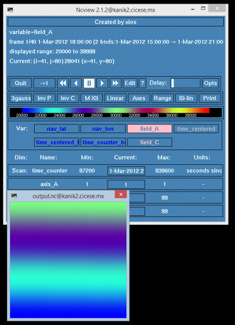

Software de modelado¶
NEMO-OPA 3.4¶
Compilando de XIOS¶
Antes de correr el script de compilacion make_xios, es necesario crear en el directorio arch, los archivos que definan la arquitectura con la que vamos a compilar xios.
En este caso usaremos los compiladores de Intel y librerias de MPI. El contenido se los archivos debe de coincidir a lo siguiente:
- arch-X64_KANIK2.path
NETCDF_INCDIR="-I/ruta_a_librerias/libraries/include"
NETCDF_LIBDIR="-L/ruta_a_librerias/libraries/lib"
NETCDF_LIB="-lnetcdf"
MPI_INCDIR=""
MPI_LIBDIR=""
MPI_LIB=""
HDF5_INCDIR="-I/ruta_a_librerias/libraries/include"
HDF5_LIBDIR="-L/ruta_a_librerias/libraries/lib"
HDF5_LIB="-lhdf5_hl -lhdf5 -lhdf5 -lcurl -lmpi"
OASIS_INCDIR="-I$PWD/../../prism/X64/build/lib/psmile.MPI1"
OASIS_LIBDIR="-L$PWD/../../prism/X64/lib"
OASIS_LIB="-lpsmile.MPI1 -lmpp_io"
- arch-X64_KANIK2.fcm
################################################################################
################### Projet xios - xmlioserver #####################
################################################################################
%CCOMPILER mpiicc
%FCOMPILER mpiifort
%LINKER mpiifort -nofor-main
%BASE_CFLAGS -diag-disable 1125 -diag-disable 279
%PROD_CFLAGS -O3 -fp-model source -D BOOST_DISABLE_ASSERTS
%DEV_CFLAGS -g -traceback
%DEBUG_CFLAGS -DBZ_DEBUG -g -traceback -fno-inline
%BASE_FFLAGS -D__NONE__
%PROD_FFLAGS -O3 -fp-model source
%DEV_FFLAGS -g -O2 -traceback
%DEBUG_FFLAGS -g -traceback
%BASE_INC -D__NONE__
%BASE_LD -lstdc
%CPP mpiicc -EP
%FPP cpp -P
%MAKE gmake
- arch-X64_KANIK2.env : Este archivo puede quedar vacio, pero se pueden cargar o definir variables de entorno si se requieren en algun caso especial.
Hecho esto podemos compilar usando el script make_xios (al hacer ./make_xios --help nos arroja informacion sobre los parametros soportados por el script)
$ ./make_xios --prod --arch X64_KANIK2
Para comprobar que el binario de XIOS funciona correctamente podemos correr un ejemplo, este ejemplo se compila tambien y lo encontramos en la carpeta bin junto al binario de XIOS: test_client.exe
Es necesario crear un script de bash para reservar nodos usando el manejador de colas PBS, el script para correr este ejemplo es el siguiente:
#!/bin/ksh
#PBS -N XIOS_TEST
#PBS -q default
#PBS -l nodes=2:ppn=10
#PBS -o xios_test.log
#PBS -e xios_test.error
set -u
set x
NPPC=7 # Numero de procesos test_client.exe
NPPS=2 # Numero de procesos xios_server.exe
date
cd /nuestra_ruta_de_trabajo/xios/bin/test
sort -u $PBS_NODEFILE > nodes.file
xiosc_execparam=""
xioss_execparam=""
# Creamos la cadena que se pasa a mpiexec, que contiene el listado en que nodo va cada proceso, y que cantidad.
while read line
do
if [ "$xiosc_execparam" == "" ]; then
xiosc_execparam="$xiosc_execparam-n $NPPC -host $line -env I_MPI_DEVICE rdssm ./test_client.exe "
xioss_execparam="$xioss_execparam-n $NPPS -host $line -env I_MPI_DEVICE rdssm -env I_MPI_EXTRA_FILESYSTEM on -env I_MPI_EXTRA_FILESYSTEM_LIST lustre ./xios_server.exe "
else
xiosc_execparam="$xiosc_execparam: -n $NPPC -host $line -env I_MPI_DEVICE rdssm ./test_client.exe "
xioss_execparam="$xioss_execparam: -n $NPPS -host $line -env I_MPI_DEVICE rdssm -env I_MPI_EXTRA_FILESYSTEM on -env I_MPI_EXTRA_FILESYSTEM_LIST lustre ./xios_server.exe "
fi
done < "nodes.file"
echo mpiexec $xiosc_execparam : $xioss_execparam
mpdboot -n 2 -r ssh -f nodes.file
mpiexec $xiosc_execparam : $xioss_execparam
mpdallexit
date
Tambien necesitaremos el archivo de configuracion de xios_server.exe, un archivo xml que define el el funcionamiento de xios y los archivos de salida.
- Archivo iodef.xml
<?xml version="1.0"?>
<simulation>
<context id="test" calendar_type="Gregorian" start_date="2012-03-01 15:00:00" time_origin="2012-02-29 15:00:00">
<field_definition level="1" enabled=".FALSE.">
<field id="field_A" operation="average" freq_op="3600s" domain_ref="domain_A" axis_ref="axis_A" />
</field_definition>
<file_definition type="one_file" par_access="collective" output_freq="6h" output_level="10" enabled=".TRUE.">
<file id="output" name="output">
<field field_ref="field_A" />
</file>
</file_definition>
<axis_definition>
<axis id="axis_A" zoom_size="2" zoom_end="3" />
</axis_definition>
<domain_definition>
<domain id="domain_A" />
</domain_definition>
<grid_definition />
</context>
<context id="toto" >
</context>
<context id="titi">
</context>
<context id="tata">
</context>
<context id="xios">
<variable_definition>
<variable_group id="buffer">
buffer_size = 80000000
buffer_server_factor_size = 2
</variable_group>
<variable_group id="parameters" >
<variable id="using_server" type="boolean">true</variable>
<variable id="info_level" type="int">50</variable>
</variable_group>
</variable_definition>
</context>
</simulation>
El resultado de este script nos debe entregar un archivo netcdf llamado: output.nc, con variables field_A y field_C.
Compilando NEMO-OPA¶
Requerimientos:
- Intérprete de comandos bash, y perl.
- Compilador fortran 90.
- Librerías MPI.
- netcdf , netcdf-fortran y sus dependencias.
Preparar archivo de la arquitectura.¶
El archivo que describe la arquitectura, debe contener las rutas al compilador a utilizar, ruta a las librerías MPI, netcdf y dependencias. En la ruta $NEMO_HOME/ARCH existen plantillas de arquitecturas comunes. Para el caso del cluster chaman usamos el siguiente archivo de arquitectura arch-X64_KANIK2.fcm:
%NCDF_HOME /LUSTRE/hmedrano/libraries
%HDF5_HOME /LUSTRE/hmedrano/libraries
%XIOS_HOME /LUSTRE/hmedrano/MODELOS/XIOS_3.5
%OASIS_HOME $WORKDIR/now/models/oa3mct
%NCDF_INC -I%NCDF_HOME/include
%NCDF_LIB -L%NCDF_HOME/lib -lnetcdff -lnetcdf -lhdf5_hl -lhdf5 -lz -lm -lcurl -lmpi -lstdc++
%XIOS_INC -I%XIOS_HOME/inc
%XIOS_LIB -L%XIOS_HOME/lib -lxios
%OASIS_INC -I%OASIS_HOME/build/lib/mct -I%OASIS_HOME/build/lib/psmile.MPI1
%OASIS_LIB -L%OASIS_HOME/lib -lpsmile.MPI1 -lmct -lmpeu -lscrip
%FC mpiifort -c -cpp
%FCFLAGS -DCPP_PARA -i4 -r8 -O3 -xSSE4.2 -fp-model source
%FFLAGS %FCFLAGS
%LD mpiifort
%LDFLAGS -lstdc++
%FPPFLAGS -P -C -traditional
%AR ar
%ARFLAGS rs
%MK gmake
%USER_INC %XIOS_INC %OASIS_INC %NCDF_INC
%USER_LIB %XIOS_LIB %OASIS_LIB %NCDF_LIB
En este archivo le diremos al script de compilación de nemo, que librerías de netcdf, hdf5 se encuentran en la ruta /LUSTRE/hmedrano/libraries , y también las librerias con las que se vinculara nemo con el servicio XIOS, esta encontrandose en /LUSTRE/hmedrano/MODELOS/XIOS_3.5.
Compilar herramientas de NEMO.¶
Antes de generar el ejecutable de nemo-opa específico para nuestra configuración tenemos que preparar las herramientas que incluye Nemo. Estas herramientas, nos servirán para crear mallas para configuraciones, mallas anidadas, archivos de pesos y formatos para fronteras tipo OBC y BDY.
La ruta donde se encuentran las herramientas es: $NEMO_HOME/TOOLS. Dentro de esta ruta está el script maketools. Al hacer ./maketools –h nos entrega los argumentos válidos que puede recibir:
@TOOLS $ ./maketools -h
Usage : maketools [-h] [-n name] [-m arch] [-j No] [-t tmpdir]
-h : help
-h institute : specific help for consortium members
-n name : tool name, [-n help] to list existing tools
-m arch : choose compiler, [-m help] to list exiting compilers
-j No : number of processes used to compile (0=nocompilation)
-t dir : remporary directory for compilation
Example to compile Agrif Nesting tools
maketools -n NESTING
Available tools :
BDY_TOOLS
GRIDGEN
MISCELLANEOUS
MPP_PREP
NESTING
OBSTOOLS
REBUILD
REBUILD_NEMO
SECTIONS_DIADCT
SIREN
WEIGHTS
Available compilers for -m option :
ALTIX_NAUTILUS_MPT : ifort compiler options for NOCS ALTIX cluster nautilus using NetCDF4 libraries
macport_osx : generic gfortran compiler options for OSX installed with macport, http://www.macports.org/
openmpi_NAVITI_MERCATOR : ifort compiler options for linux
PW7_C2A_XIO : POWER 6 at ECMWF
PW7_METO : IBM POWER7 UKMO
x3750_ADA : Ada IBM x3750 at french IDRIS, http://www.idris.fr/ada/ada-hw-ada.html
X64_CURIE : Curie BULL at TGCC, http://www-hpc.cea.fr/en/complexe/tgcc-curie.htm
X64_KANIK2 : Sistema Kanik2, compiladores intel hdf y netcdf paralelo.
X64_MOBILIS : Mobilis - ClusterVision X86_64 cluster at NOCS
X64_VAYU : Vayu Sun Constellation at Australian NCI, http://nf.nci.org.au/facilities/vayu/hardware.php
X64_YELLOWSTONE : Yellowstone IBM at NCAR, http://www2.cisl.ucar.edu/resources/yellowstone
XC_ARCHER : compiler options for Archer CRAY XC-30 (using crayftn compiler)
XC_ARCHER_INTEL : compiler options for Archer CRAY XC-30 (using intel compiler)
Available consortium member sub-directories :
CMCC
CNRS
INGV
NOC
OLD
use "makenemo -h all" or "makenemo -m help" to see compilers available in member's sub-directories
Para compilar las herramientas necesitamos especificarle en el comando, la arquitectura que vamos a usar, en este caso usaremos la listada como X64_KANIK2.
@TOOLS> ./maketools -m X64_KANIK2 Compila todas las herraminetas listadas usando la arquitectura definida en X64_KANIK2
@TOOLS> ./maketools -n NESTING -m X64_KANIK2 Compila solo la herramienta NESTING.
Preparar una nueva configuración y compilar NEMO.¶
Dentro de la ruta $NEMO_HOME/CONFIG encontramos por default algunas configuraciones de ejemplo.
También encontramos el script que prepara y compila las configuraciones “makenemo”, al correr el comando asi: ./makenemo –h nos lista los parámetros que recibe, las configuraciones y las arquitecturas disponibles.
@CONFIG $ ./makenemo -h
Usage : makenemo [-h] [-n name] [-m arch] [-d dir1 dir2] [-r conf] [-s Path] [-e Path] [-j No] [-v No] [-k 0/1]
-h : help
-h institute : specific help for consortium members
-n name : config name, [-n help] to list existing configurations
-m arch : choose compiler, [-m help] to list existing compilers
-d dir : choose NEMO sub-directories
-r conf : choose reference configuration
-s Path : choose alternative location for NEMO main directory
-e Path : choose alternative location for MY_SRC directory
-j No : number of processes used to compile (0=nocompilation)
-v No : set verbosity level for compilation [0-3]
-k 0/1 : used cpp keys check (default = 1 -> check activated)
-t dir : temporary directory for compilation
Example to install a new configuration MY_CONFIG
with OPA_SRC and LIM_SRC_2
makenemo -n MY_CONFIG -d "OPA_SRC LIM_SRC_2"
Available configurations :
GOLFO12-E01 OPA_SRC LIM_SRC_2 NST_SRC
GOLFO12-J01 OPA_SRC LIM_SRC_2 NST_SRC
GOLFO12-J03 OPA_SRC LIM_SRC_2 NST_SRC
TATL025-J02 OPA_SRC LIM_SRC_2 NST_SRC
TATL025-J03 OPA_SRC LIM_SRC_2 NST_SRC
GOLFO36-J20 OPA_SRC LIM_SRC_2 NST_SRC
GOLFO36-J21 OPA_SRC LIM_SRC_2 NST_SRC
GOLFO36-J01 OPA_SRC LIM_SRC_2 NST_SRC
GOLFO36-J02 OPA_SRC LIM_SRC_2 NST_SRC
GOLFO36-J03 OPA_SRC LIM_SRC_2 NST_SRC
GOLFO36-J04 OPA_SRC LIM_SRC_2 NST_SRC
RIDGE5km-J01 OPA_SRC LIM_SRC_2 NST_SRC
RIDGE05KM-J01 OPA_SRC LIM_SRC_2 NST_SRC
RIDGE05KM-J02 OPA_SRC LIM_SRC_2 NST_SRC
RIDGE05KM-J03 OPA_SRC LIM_SRC_2 NST_SRC
RIDGE05KM-J04 OPA_SRC LIM_SRC_2 NST_SRC
TROP36-J01 OPA_SRC LIM_SRC_2 NST_SRC
TROP36-J02 OPA_SRC LIM_SRC_2 NST_SRC
TROP36-J03 OPA_SRC LIM_SRC_2 NST_SRC
TROP04-J01 OPA_SRC LIM_SRC_2 NST_SRC
TROP04-J03 OPA_SRC LIM_SRC_2 NST_SRC
GOLFO36-J10 OPA_SRC LIM_SRC_2 NST_SRC
GOLFO36-J11 OPA_SRC LIM_SRC_2 NST_SRC
TROP04-J02 OPA_SRC LIM_SRC_2 NST_SRC
TATL025-J01 OPA_SRC LIM_SRC_2 NST_SRC
TROP04-J10 OPA_SRC LIM_SRC_2 NST_SRC
TROP025-J20 OPA_SRC LIM_SRC_2 NST_SRC
TROP04-J20 OPA_SRC LIM_SRC_2 NST_SRC
TROP04-J21 OPA_SRC LIM_SRC_2 NST_SRC
TROP04-J22 OPA_SRC LIM_SRC_2 NST_SRC
TROP04-J23 OPA_SRC LIM_SRC_2 NST_SRC
TROP04-J24 OPA_SRC LIM_SRC_2 NST_SRC
TROP04-J33 OPA_SRC LIM_SRC_2 NST_SRC
TROP04-J32 OPA_SRC LIM_SRC_2 NST_SRC
TATL025-J10 OPA_SRC LIM_SRC_2 NST_SRC
TATL025-J11 OPA_SRC LIM_SRC_2 NST_SRC
TATL025-J12 OPA_SRC LIM_SRC_2 NST_SRC
TATL025-J13 OPA_SRC LIM_SRC_2 NST_SRC
TROP04-AMLJ50 OPA_SRC LIM_SRC_2 NST_SRC
TROP04-J30 OPA_SRC LIM_SRC_2 NST_SRC
TROP04-J31 OPA_SRC LIM_SRC_2 NST_SRC
GOLFO36-J01-ONESTORM OPA_SRC LIM_SRC_2 NST_SRC
GOLFO36-GUSTAVIKE OPA_SRC LIM_SRC_2 NST_SRC
GOLFO36-NOGUSTAVIKE OPA_SRC LIM_SRC_2 NST_SRC
GOLFO36-CIC10 OPA_SRC LIM_SRC_2 NST_SRC
GOLFO36-CIC01 OPA_SRC LIM_SRC_2 NST_SRC TOP_SRC
GOLFO12-PEMEX001 OPA_SRC LIM_SRC_2 NST_SRC
AMM12 OPA_SRC LIM_SRC_2 TOP_SRC NST_SRC OFF_SRC
GOLFO36-CIC01-EXP01 OPA_SRC LIM_SRC_2 NST_SRC TOP_SRC
GOLFO36-LIGHT OPA_SRC LIM_SRC_2 NST_SRC TOP_SRC
Example to remove bad configuration
./makenemo -n MY_CONFIG clean_config
Example to clean
./makenemo clean
Example to list the available keys of a CONFIG
./makenemo list_key
Example to add and remove keys
./makenemo add_key "key_iomput key_mpp_mpi" del_key "key_agrif"
Example to add and remove keys for a new configuration, and do not compile
./makenemo -n MY_CONFIG -j0 add_key "key_iomput key_mpp_mpi" del_key "key_agrif"
Available compilers for -m option :
ALTIX_NAUTILUS_MPT : ifort compiler options for NOCS ALTIX cluster nautilus using NetCDF4 libraries
macport_osx : generic gfortran compiler options for OSX installed with macport, http://www.macports.org/
openmpi_NAVITI_MERCATOR : ifort compiler options for linux
PW7_C2A_XIO : POWER 6 at ECMWF
PW7_METO : IBM POWER7 UKMO
x3750_ADA : Ada IBM x3750 at french IDRIS, http://www.idris.fr/ada/ada-hw-ada.html
X64_CURIE : Curie BULL at TGCC, http://www-hpc.cea.fr/en/complexe/tgcc-curie.htm
X64_KANIK2 : Sistema Kanik2, compiladores intel hdf y netcdf paralelo.
X64_MOBILIS : Mobilis - ClusterVision X86_64 cluster at NOCS
X64_VAYU : Vayu Sun Constellation at Australian NCI, http://nf.nci.org.au/facilities/vayu/hardware.php
X64_YELLOWSTONE : Yellowstone IBM at NCAR, http://www2.cisl.ucar.edu/resources/yellowstone
XC_ARCHER : compiler options for Archer CRAY XC-30 (using crayftn compiler)
XC_ARCHER_INTEL : compiler options for Archer CRAY XC-30 (using intel compiler)